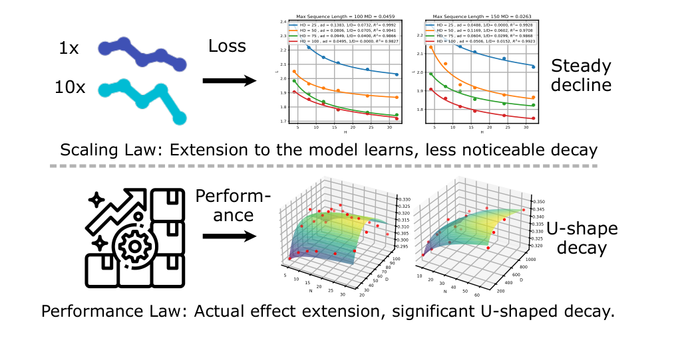
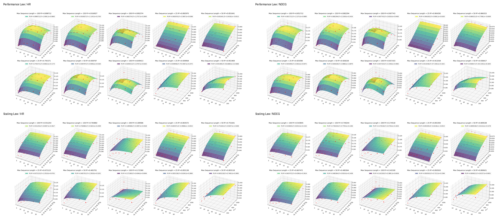

Estimate sequence complexity with approximate entropy instead of relying only on dataset size.
ICML 2024
Performance Laws for Sequential Recommendation
A performance-centered scaling analysis with approximate entropy for modeling how recommendation quality changes with data quality and model configuration.
Tingjia Shen, Hao Wang, Chuhan Wu, Jin Yao Chin, Wei Guo, Yong Liu, Huifeng Guo, Defu Lian, Ruiming Tang, and Enhong Chen. Optimizing Sequential Recommendation Models with Scaling Laws and Approximate Entropy. In Proceedings of the 41st International Conference on Machine Learning (ICML 2024), PMLR 235, 2024.
Paper / PDF / Project Page / Citation
P-Law studies how sequential recommendation performance changes with model scale and data quality. It fits HR/NDCG with a recommendation-specific Performance Law and uses Approximate Entropy to quantify sequence complexity.

1. Method: From Scaling Law to Performance Law
P-Law studies sequential recommendation through performance metrics such as HR and NDCG, using approximate entropy to represent data quality and reveal where larger models or more complex data help or hurt.
Fit HR/NDCG over model depth, embedding dimension, and entropy-derived data parameters.
Use fitted surfaces to identify efficient settings without exhaustive full-scale training.
2. Code
The repository contains an entropy utility, transformer training code, and appendix scripts for law fitting and visualization.
pip install -e PerformanceLawcd General_Transformer
torchrun --standalone --nproc_per_node=1 main.py --model_name llama --n_layers 8cd Performance_Law_Appendix_Result
python performance_law_fitting.py3. Experimental Highlights
The fitted surfaces show that recommendation performance depends jointly on model scale and data quality, and that HR/NDCG behavior can be non-monotonic.
HR
Direct performance modeling
The framework fits ranking performance directly rather than only modeling training loss.
ApEn
Data quality signal
Approximate entropy captures sequence complexity and supports cross-dataset analysis.
U-shape
Configuration insight
Performance can improve, saturate, and decay as model and data settings change.

4. Citation
@inproceedings{shen2024optimizing,
title = {Optimizing Sequential Recommendation Models with Scaling Laws and Approximate Entropy},
author = {Shen, Tingjia and Wang, Hao and Wu, Chuhan and Chin, Jin Yao and Guo, Wei and Liu, Yong and Guo, Huifeng and Lian, Defu and Tang, Ruiming and Chen, Enhong},
booktitle = {Proceedings of the 41st International Conference on Machine Learning},
series = {Proceedings of Machine Learning Research},
volume = {235},
year = {2024}
}